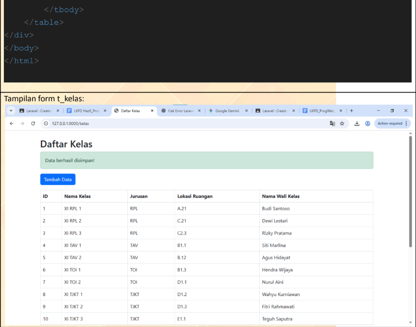
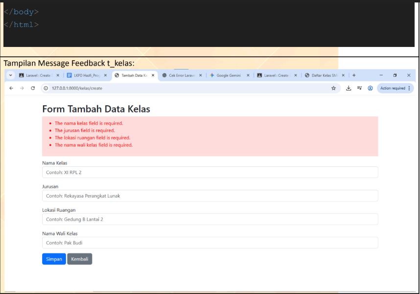
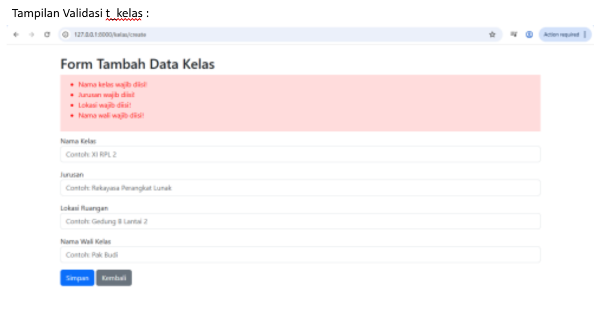
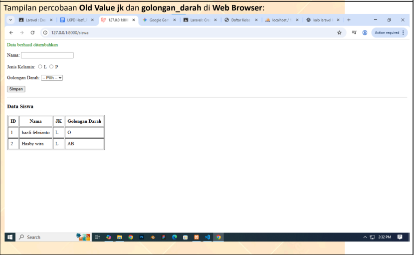

Create Data dengan Laravel
Pada materi ini, saya mempelajari bagaimana membuat fitur tambah data menggunakan Facade DB. Saya juga belajar menambahkan validasi dan mempertahankan nilai input lama agar form lebih nyaman digunakan.
Studi Kasus 1
Lakukan hal yang sama untuk tabel t_kelas. Buatlah tampilan form untuk menambahkan data kelas dan success/error message feedback-nya.
Pada studi kasus pertama, saya diminta membuat form untuk menambahkan data kelas ke tabel t_kelas, lalu menambahkan pesan sukses dan error sebagai feedback setelah proses input data dilakukan.
Source code Form t_kelas
<!DOCTYPE html>
<html>
<head>
<title>Daftar Kelas SMKN 4</title>
<link href="https://cdn.jsdelivr.net/npm/bootstrap@5.3.0/dist/css/bootstrap.min.css" rel="stylesheet">
</head>
<body>
<div class="container mt-4">
<h2>Daftar Kelas SMKN 4</h2>
@if(session('success'))
<p style="color:green; background:#d4edda; padding:10px;">
{{ session('success') }}
</p>
@endif
@if(session('error'))
<p style="color:red; background:#ffdede; padding:10px;">
{{ session('error') }}
</p>
@endif
<a href="{{ route('kelas.create') }}" class="btn btn-primary mb-3">Tambah Data</a>
<table class="table table-bordered">
<thead>
<tr>
<th>ID</th>
<th>Nama Kelas</th>
<th>Jurusan</th>
<th>Lokasi Ruangan</th>
<th>Nama Wali Kelas</th>
</tr>
</thead>
<tbody>
@forelse ($data as $k)
<tr>
<td>{{ $k->id }}</td>
<td>{{ $k->nama_kelas }}</td>
<td>{{ $k->jurusan }}</td>
<td>{{ $k->lokasi_ruangan }}</td>
<td>{{ $k->nama_wali_kelas }}</td>
</tr>
@empty
<tr>
<td colspan="5" class="text-center">Belum ada data kelas</td>
</tr>
@endforelse
</tbody>
</table>
</div>
</body>
</html>
Source code Message Feedback t_kelas
<!DOCTYPE html>
<html>
<head>
<title>Tambah Data Kelas</title>
<link href="https://cdn.jsdelivr.net/npm/bootstrap@5.3.0/dist/css/bootstrap.min.css" rel="stylesheet">
</head>
<body>
<div class="container mt-4">
<h2>Form Tambah Data Kelas</h2>
@if($errors->any())
<div style="color:red; background:#ffdede; padding:10px; margin-bottom:10px;">
<ul>
@foreach($errors->all() as $error)
<li>{{ $error }}</li>
@endforeach
</ul>
</div>
@endif
<form action="{{ route('kelas.store') }}" method="POST">
@csrf
<div class="mb-3">
<label>Nama Kelas</label>
<input type="text" name="nama_kelas" class="form-control" placeholder="Contoh: XI RPL 2">
</div>
<div class="mb-3">
<label>Jurusan</label>
<input type="text" name="jurusan" class="form-control" placeholder="Contoh: Rekayasa Perangkat Lunak">
</div>
<div class="mb-3">
<label>Lokasi Ruangan</label>
<input type="text" name="lokasi_ruangan" class="form-control" placeholder="Contoh: Gedung B Lantai 2">
</div>
<div class="mb-3">
<label>Nama Wali Kelas</label>
<input type="text" name="nama_wali_kelas" class="form-control" placeholder="Contoh: Pak Budi">
</div>
<button type="submit" class="btn btn-primary">Simpan</button>
<a href="{{ route('kelas.index') }}" class="btn btn-secondary">Kembali</a>
</form>
</div>
</body>
</html>
Studi Kasus 2
Implementasikan validasi untuk tabel t_kelas, coba tambahkan beberapa validasi yang berbeda selain yang sudah dijelaskan.
Pada studi kasus kedua, saya diminta menambahkan validasi yang lebih beragam pada proses input data t_kelas. Tujuannya agar data yang masuk lebih terkontrol dan sesuai aturan yang dibuat.
Source code Validasi t_kelas di Controller
<?php
namespace App\Http\Controllers;
use Illuminate\Http\Request;
use Illuminate\Support\Facades\DB;
class KelasController extends Controller
{
public function index()
{
$data = DB::table('t_kelas')->get();
return view('kelas.index', compact('data'));
}
public function create()
{
return view('kelas.create');
}
public function store(Request $request)
{
// VALIDASI
$request->validate([
'nama_kelas' => 'required|min:5|max:20',
'jurusan' => 'required|min:3',
'lokasi_ruangan' => 'required|max:10',
'nama_wali_kelas' => 'required|alpha_spaces'
],[
'nama_kelas.required' => 'Nama kelas wajib diisi!',
'nama_kelas.min' => 'Nama kelas minimal 5 karakter!',
'nama_kelas.max' => 'Nama kelas maksimal 20 karakter!',
'jurusan.required' => 'Jurusan wajib diisi!',
'jurusan.min' => 'Jurusan minimal 3 huruf!',
'lokasi_ruangan.required' => 'Lokasi wajib diisi!',
'lokasi_ruangan.max' => 'Lokasi maksimal 10 karakter!',
'nama_wali_kelas.required' => 'Nama wali wajib diisi!',
'nama_wali_kelas.alpha' => 'Nama wali hanya huruf!'
]);
// INSERT DATA
$status = DB::table('t_kelas')->insert([
'nama_kelas' => $request->nama_kelas,
'jurusan' => $request->jurusan,
'lokasi_ruangan' => $request->lokasi_ruangan,
'nama_wali_kelas' => $request->nama_wali_kelas,
]);
// REDIRECT
if ($status) {
return redirect('/kelas')->with('success', 'Data berhasil ditambahkan!');
} else {
return redirect('/kelas')->with('error', 'Data gagal ditambahkan!');
}
}
}Source code Validasi t_kelas di Views
<!DOCTYPE html>
<html>
<head>
<title>Tambah Data Kelas</title>
<link href="https://cdn.jsdelivr.net/npm/bootstrap@5.3.0/dist/css/bootstrap.min.css" rel="stylesheet">
</head>
<body>
<div class="container mt-4">
<h2>Form Tambah Data Kelas</h2>
@if($errors->any())
<div style="color:red; background:#ffdede; padding:10px; margin-bottom:10px;">
<ul>
@foreach($errors->all() as $error)
<li>{{ $error }}</li>
@endforeach
</ul>
</div>
@endif
<form action="{{ route('kelas.store') }}" method="POST">
@csrf
<div class="mb-3">
<label>Nama Kelas</label>
<input type="text" name="nama_kelas" class="form-control" placeholder="Contoh: XI RPL 2">
</div>
<div class="mb-3">
<label>Jurusan</label>
<input type="text" name="jurusan" class="form-control" placeholder="Contoh: Rekayasa Perangkat Lunak">
</div>
<div class="mb-3">
<label>Lokasi Ruangan</label>
<input type="text" name="lokasi_ruangan" class="form-control" placeholder="Contoh: Gedung B Lantai 2">
</div>
<div class="mb-3">
<label>Nama Wali Kelas</label>
<input type="text" name="nama_wali_kelas" class="form-control" placeholder="Contoh: Pak Budi">
</div>
<button type="submit" class="btn btn-primary">Simpan</button>
<a href="{{ route('kelas.index') }}" class="btn btn-secondary">Kembali</a>
</form>
</div>
</body>
</html>
Studi Kasus 3
Implementasikan User's Old Value untuk input field jk dan golongan_darah
Pada studi kasus ketiga, saya mempelajari penggunaan old value agar input yang sudah diisi pengguna tidak hilang saat form dikirim dan terjadi validasi. Saya menerapkannya pada field nama, jenis kelamin, dan golongan darah.
Source code pada views siswa/form
@if(session('success'))
<p style="color:green">
{{ session('success') }}
</p>
@endif
<form method="POST" action="/siswa/store">
@csrf
Nama:
<input type="text" name="nama" value="{{ old('nama') }}"><br><br>
Jenis Kelamin:
<input type="radio" name="jk" value="L" {{ old('jk') == 'L' ? 'checked' : '' }}> L
<input type="radio" name="jk" value="P" {{ old('jk') == 'P' ? 'checked' : '' }}> P
<br><br>
Golongan Darah:
<select name="golongan_darah">
<option value="">-- Pilih --</option>
<option value="A" {{ old('golongan_darah') == 'A' ? 'selected' : '' }}>A</option>
<option value="B" {{ old('golongan_darah') == 'B' ? 'selected' : '' }}>B</option>
<option value="AB" {{ old('golongan_darah') == 'AB' ? 'selected' : '' }}>AB</option>
<option value="O" {{ old('golongan_darah') == 'O' ? 'selected' : '' }}>O</option>
</select>
<br><br>
<button type="submit">Simpan</button>
</form>
<hr>
<h3>Data Siswa</h3>
<table border="1" cellpadding="8">
<tr>
<th>ID</th>
<th>Nama</th>
<th>JK</th>
<th>Golongan Darah</th>
</tr>
@foreach($siswa as $s)
<tr>
<td>{{ $s->id }}</td>
<td>{{ $s->nama }}</td>
<td>{{ $s->jk }}</td>
<td>{{ $s->golongan_darah }}</td>
</tr>
@endforeach
</table>
Dari studi kasus ini, saya memahami bahwa old value sangat membantu agar input pengguna tetap tersimpan sementara saat form diproses, sehingga pengguna tidak perlu mengetik ulang dari awal.